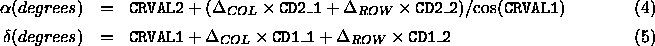
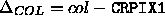

The bias-subtracted, flatfielded data frames in the EDR include World Coordinate System (WCS) information in the FITS file headers. This information enables some display and analysis software to provide RA and DEC information on a pixel by pixel basis and also to overlay an equatorial coordinate grid over the image.
Present WCS proposed standards calabretta01 do not fully support a rigorous transformation from great circle to equatorial coordinates. As a result, the WCS representation does not reflect the full accuracy of the astrometric solution, but the accuracy is better than one pixel (about 0.4'') within a frame.
The conversion from (row,col) measured in a field to  (J2000
degrees) is
(J2000
degrees) is

where  and  , and CRVAL1, CRVAL2, CRPIX1,
CRPIX2, CD1_1, CD1_2, CD2_2, and CD2_1
are parameters defined in the FITS header for each field.
, and CRVAL1, CRVAL2, CRPIX1,
CRPIX2, CD1_1, CD1_2, CD2_2, and CD2_1
are parameters defined in the FITS header for each field.